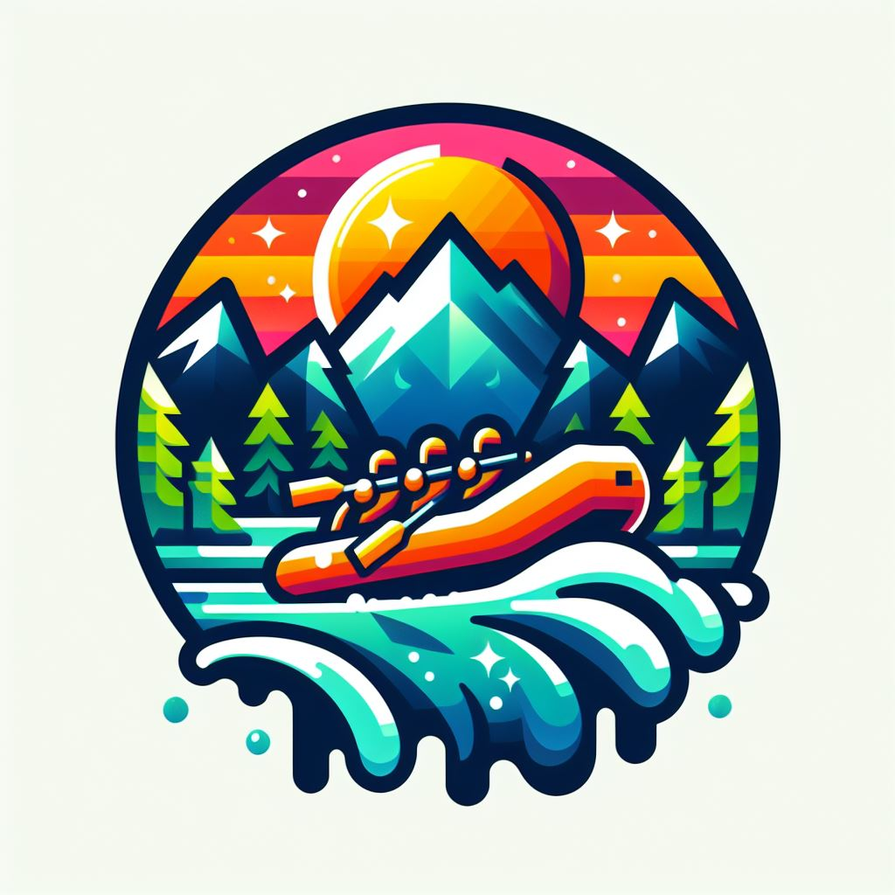

Overview
Purpose
Rafting | white water adventures has been newly established to provide a fun and safe experience
exploring the beautiful outdoors. Founded on a deep passion for adventure and educating communities
in river safety, outdoor safety, and enviornmental wardship. We hope to inspire you to get outside
and enjoy the world around you in a new and exciting way.
Audience
Who is white water rafting for? Anyone ages 13 and up looking for an adventure and who is considered
to be in relatively good shape.
Do you need to know how to swim? No, everyone is required to wear a safety floatation device so it is not
a requirement, but be prepared for any possible time in the water.
How many people can be in a single raft? Generally you should expect no more than 7 people with one of those
riders being your guide. So bring yourself and 5 of your closest family and friends for a thrilling adventure!
Will you need to bring anything? No, we will have everything you need. Life jackets, helmets, paddles, wetsuits,
first aid kit, and of course the raft!
Branding
Website Logo
Style Guide
Color Palette
Pallete URL: https://coolors.co/palette/000000-14213d-fca311-e5e5e5-ffffff
• primary-color: Black
• secondary-color: Black
• accent1-color: Platinum
• accent2 color: Oxford Blue
Typography
Heading Font: Playfair
Normal Text/Paragraph Example Font
Colored Callout Example Font
Navigation
Wireframes
Home Page Wireframe

About Us Page Wireframe